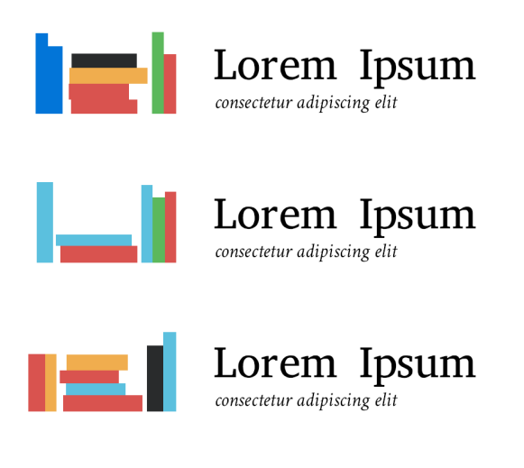
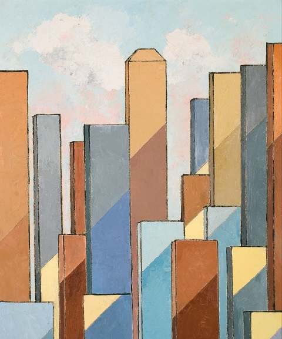
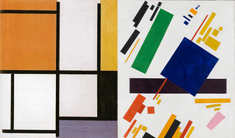
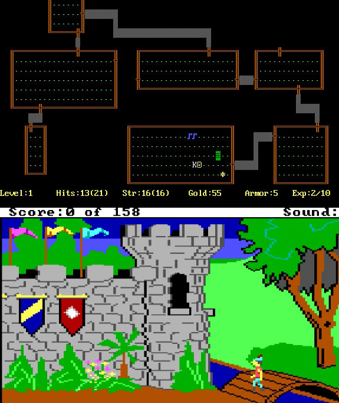

Henning, H. (2020). “Despite everything, it’s still you”. https://www.flickr.com/photos/merajchhaya/11370696464/in/photostream/
Figure 2. Randomly generated bookshelf logo.

Figure 3. Shaw.

Charles Green Shaw. (1934). Shape Shadows [oil on board]. D. Wigmore Fine Art. http://www.artnet.com/artists/charles-green-shaw/shape-shadows-a-T-cNVmsfEEPBWh8siih4nQ2
Figure 4. Mondrian. Figure 5. Malevich.

Piet Mondrian. (1921). Composition [oil on canvas]. The Metropolitan Museum of Art. https://www.metmuseum.org/art/collection/search/490012
Campbell, C. (2014). How Eugene Jarvis created arcade masterpiece Robotron 2084. https://www.polygon.com/2014/3/21/5531242/how-eugene-jarvis-created-arcade-masterpiece-robotron-2084
Figure 9. Rogue. Figure 10. King's Quest.

IMDb. (n.d.). Rogue (Video Game 1980). https://www.imdb.com/title/tt2137243/
Minotti, M. (2014). The history of King's Quest. https://venturebeat.com/2014/08/12/the-history-of-kings-quest/
Works best in Chrome or Microsoft Edge. Use Cntrl+ or Cntrl- to change zoom.